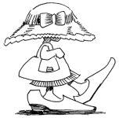
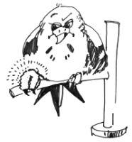
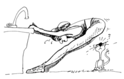

This page has usage examples for the following words:

arthritis 関節炎 かんせつえん
elbow 肘 ひじ
hand 手 て
inflammation 腰痛 ようつう
joint(s) 関節 かんせつ
joint swelling 関節の腫れ かんせつのはれ
joint ache, arthralgia 関節の痛み かんせつのいたみ
joint stiffness 関節のこわばり かんせつのこわばり
knee 膝 ひざ
morning stiffness 朝のこわばり あさのこわばり
pain 疼痛 とうつう
physical therapy 運動療法 うんどうりょうほう
rheumatism リウマチ
rheumatoid arthritis, chronic rheumatism 慢性関節リウマチ まんせいかんせつリウマチ
shoulder 肩 かた
wrist 手首 てくび
I have been diagnosed with rheumatoid arthritis. The disease hasn't improved at all.
リウマチと診断されましたが、一向によくなりません。
リウマチと しんだんされましたが、いっこうによくなりません。
Is there any good medication for it?
治る薬はないのでしょうか？
なおるくすりは ないのでしょうか？
I was very healthy, never became ill or had surgery until a few years ago. I was very sure of my health, but…
数年前まではいたって健康で大きな病気や手術をしたこともなく、体力にも自信があったのですが・・・
すうねんまえまでは いたってけんこうで、おおきなびょうきや しゅじゅつをしたこともなく、たいりょくにもじしんがあったのですが・・・
Because of my painful arthritis, I have difficulty holding things and often drop them.
関節炎のため指が痛くて曲がりにくいので、たまに物を落としてしまいます。
かんせつえんのため、ゆびがいたくて まがりにくいので、たまに ものをおとしてしまいます。
The pain in my joints is especially severe during cold seasons or in high humidity.
寒い季節や湿度の高い日は、特に、関節の節々が痛みます。
さむいきせつや しつどのたかいひは、とくに かんせつのふしぶしがいたみます。
My doctor recommended that I come to Hawaii for its warm climate and low humidity.
温暖で湿気の少ないハワイの気候がリウマチには良いと、かかりつけのお医者さんに勧められました。
おんだんで しっけのすくない ハワイのきこうが リウマチにはよいと、かかりつけのおいしゃさんに すすめられました。
I haven't had pain while in Hawaii.
ハワイで過ごしている間、一度も痛みはありません。
ハワイですごしているあいだ、いちどもいたみはありません。

A conversation between a patient and a doctor about the rheumatism
Patient:
An acquaintance who suffers from rheumatism tells me that because his body aches during winter (in Japan), he comes over and receives treatment in Hawaii. It seems that he tries to change his living environment as much as he can.
私の知人は、寒い冬になるとリウマチで身体が痛むので、ハワイで療養することにしたそうです。可能な中で環境を変える努力をすることは必要なことですね。
Doctor:
It is commendable that he lives actively without succumbing to the disease. Rheumatism, which originates from the Greek, is a generic name of diseases that manifest themselves as joint stiffness, joint ache and restriction in movement. Generally speaking, rheumatism indicates rheumatoid arthritis (RA). The word “rheumatoid” means you have rheumatism or your symptoms are characteristic of rheumatism. There are many diseases which cause joint aches. RA must be diagnosed by specialists and meet specific criteria as determined by the American College of Rheumatology. The best characteristic of RA is morning stiffness of joints of hands and arms (both sides). In addition to various oral medicines, exercise is effective, as it prevents muscle weakness and helps boost mood. In that regard, Hawaii is an excellent place where you can exercise all the year round.
病気に負けることなく積極的に暮らしていらっしゃるのは立派ですね。リウマチ (Rheumatism) は、ギリシャ語に源がありますが、関節のこわばり、痛み、運動制限をもたらす疾患を総称します。普通にリウマチと言えば、慢性関節リウマチ (rheumatoid arthritis) のことをさしています。rheumatoid とは、rheumatism にかかった状態、或いは、rheumatism の特徴を持つ状態を意味します。関節の痛みを伴った病気は多く、慢性関節リウマチの診断は、専門家の診察や、米国リウマチ協会基準に沿ったものであることが必要ですが、手や腕関節の起床時のこわばりが両側に起きることが、最も大きな特徴といえます。種々の内服薬に加えて、運動をすることは、筋肉の弱化を防ぎ、気分を高める効果があります。その為にも、一年を通して自由に運動が可能なハワイは、最適な所と言えましょう。

My two cents 一言おせっかい
People with a slight ailment will be more careful and live longer than those who are never ill. 持病が一つくらいあっても、一病息災ということもありますからね。
[ka03]
| © 1995-2013 NACOS International Institute. All Rights Reserved. |